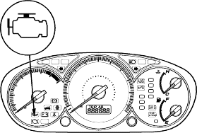
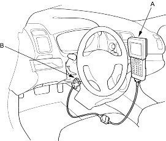

Intermittent Failures
The term ''intermittent failure'' means a system may have had a failure, but it checks OK now. If the Malfunction Indicator Lamp (MIL) on the dash does not come on, check for poor connections or loose wires at all connectors related to the circuit that you are troubleshooting.
Opens and Shorts
''Open'' and ''Short'' are common electrical terms. An open is a break in a wire or at a connection. A short is an accidental connection of a wire to ground or to another wire. In simple electronics, this usually means something will not work at all. In complex electronics (like ECM's/PCM's) this can sometimes mean something works, but not the way it is supposed to.
How to Use the PGM Tester or a Scan Tool
If the MIL (Malfunction Indicator Lamp) has come on
- Start the engine and check the MIL.

- If the MIL stays on, connect the Honda PGM Tester (A) or a scan tool to the Data Link Connector (DLC) (B) located under the driver's side of the dashboard.

- Turn the ignition switch ON (II).
- Check the Diagnostic Trouble Code (DTC) and note it. Also check the freeze frame data. Refer to the DTC Troubleshooting Index and begin the appropriate troubleshooting procedure.
NOTE:
- Freeze frame data indicates the engine conditions when the first malfunction, misfire or fuel trim malfunction was detected.
- The scan tool and the Honda PGM Tester can read the DTC, freeze frame data, current data and other Engine Control Module (ECM)/Powertrain Control Module (PCM) data.
- For specific operations, refer to the user's manual that came with the scan tool or Honda PGM Tester.
If the MIL did not come on
If the MIL did not come on but there is a driveability problem, refer to the Symptom Troubleshooting Index in this section.
If you cannot duplicate the DTC
Some of the troubleshooting in this section requires you to reset the ECM/PCM and try to duplicate the DTC. If the problem is intermittent and you cannot duplicate the code, do not continue through the procedure. To do so will only result in confusion and possibly, a needlessly replaced ECM/PCM.